概述
本文章通过一个制作Toast弹窗的例子，详细讲解如何使用Animator和它的trigger参数来创建简单的UI动画。
Toast弹窗会从屏幕底部下降，停留3秒，然后上升到屏幕上面消失。
最终的效果如下：
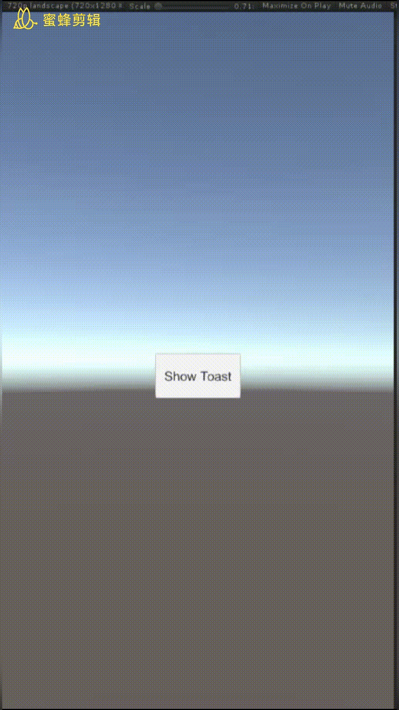
原理
Unity帮我们做每帧插值，改变我们设定的属性。
Toast组件构成
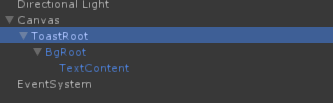
首先根节点是一个空的GameObject，名字ToastRoot，对齐屏幕顶端，没有Height：
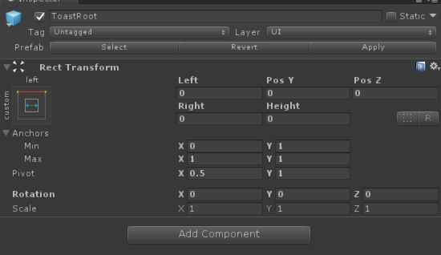
接下来是背景图节点BgRoot，同样向上对其，高度96像素：
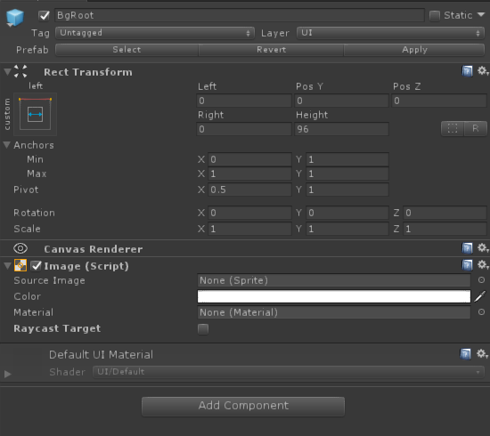
最后是Toast的内容，这一部分任君发挥了，我这里只放了一个文本框TextContent：
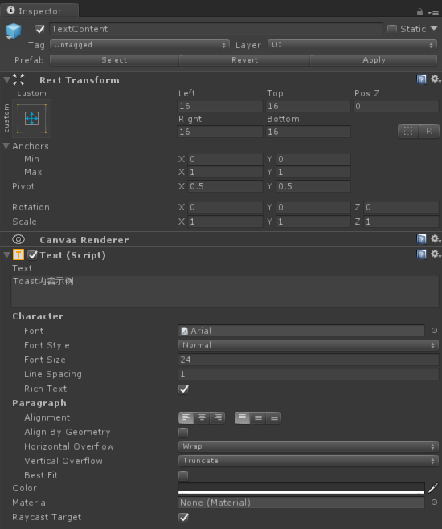
添加Animator组件
我们的目的是让Toast弹窗动起来，所以我们的动画操作对象应该是BgRoot这张图片。
我们往BgRoot上添加一个Animator组件。添加之后可以发现Controller字段是空的，所以我们还得手动创建一个AnimationController。在合适的路径下，我们右键Project视图下的空白处，选择Create -> AnimationController，给新文件取名为ToastAnimController。然后我们回到BgRoot，把controller文件拽拖到Controller字段上。
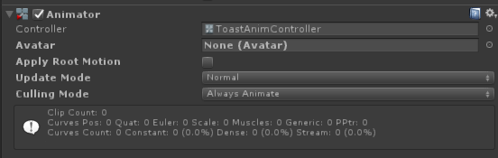
创建default状态动画
Toast弹窗的初始状态当然是隐藏在屏幕上方，当有需要时才会从上面跌落下来。所以我们现在需要先给它设置一个初始状态。我们双击刚才的controller，打开Animator视图。
空白处右键，选择Create State -> Empty来创建一个状态，创建之后将它命名为Default。Unity会自动将Entry连到Default上，这意味着默认播放状态就会是Default。
上面说了，默认情况下Toast应该在屏幕上方，那么我们先来设置它的状态。
说是设置状态，其实就是创建一个只有一帧的动画，让节点去执行。我们接下来创建一个默认动画，还是任意路径，右键Project视图空白处，选择Create -> Animation，创建一个动画，就叫做ToastDefault吧。
回到Animator视图，选择Default状态，然后把ToastDefault拽进去Default状态的Motion字段。
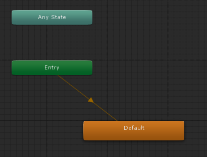
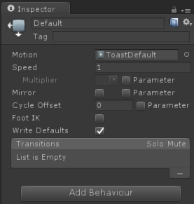
最后我们来设置一下这个animation本身。首先点击Window -> Animation来打开Animation视图。然后我们选择Hierachy视图中的BgRoot节点，就可以看到下面出现了对应的动画编辑器。
Toast窗口的初始状态应该是：Toast窗口的下边缘对齐屏幕的上边缘。
点击Add Property添加四个属性：RectTransform.AnchorMax, RectTransform.AnchorMin, RectTransform.Pivot, RectTransform.AnchoredPosition。
然后点击左上角的录制按钮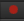。
修改BgRoot参数（修改红框的两个）：
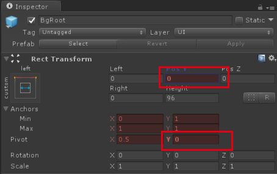
查看Animation视图，可以看见unity自动给我们在第1.00秒还添加了另一个关键战，我们选中这一帧（最上面一个点可以全选当前帧所有的属性）的节点，右键delete keys删除掉。
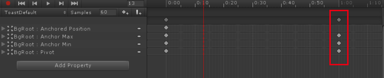
Ctrl + S保存一下这个动画。
取消录制按钮的选中状态，防止误操作。
录制hide和show动画
接下来我们创建show动作，让窗口从屏幕上方下沉。
按照上面的方法，在Animator视图创建一个Show状态，再在project视图创建一个ToastShow动画，然后拖动到Show状态的motion字段上。
接下来编辑Show动画。初始状态，在第1帧设置成和前面的default状态一致就可以了：
然后我们选中第0.3秒，点击录制按钮，然后更改BgRoot的状态如下：
创建完show之后再创建hide，我们创建一个Hide状态以及一个ToastHide动画，然后拽托引用。
由于hide就是show的逆序，所以这里不再赘述动画要怎么制作，简单来说，第一帧是
反过来0.3秒那一帧是
设置loopTime
当然，我们的show和hide动画只需要播放一次，不需要循环播放。所以我们分别点击Show和Hide状态对应的动画，把LoopTime框取消选中：
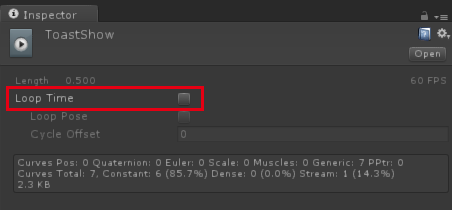
调整各状态的关系
接下来我们要为各个状态的跳转设定条件。首先从外面进来肯定是Entry，它会自动跳转到Default状态。
先添加两个跳转条件，点击Parameters选项卡，点击加号添加两个Trigger，分别命名为show和hide。
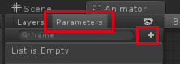
当我们要显示Toast的时候，应该是从Default状态进入Show状态，于是我们新建一个联系，右键Default状态，选择Make Transition，连接到Show状态上。然后选中这个联系，在inspector中：
- 取消
Has Exit Time选中状态（当这个选项被选中的时候，代表上一个状态的动画播放完成后，会自动跳转到上一个动画，也就是Default状态会自动跳转到Show，这并不是我们要的） - 新增一个Condition，新增为刚才新建的
show，代表着当这个trigger被设置的时候，会从Default状态进入Show状态。

Toast显示出来若干秒之后需要隐藏，所以我们还需要一个从Show到Hide状态的联系。创建之后，我们添加condition为hide。同样需要取消选中Has Exit Time。
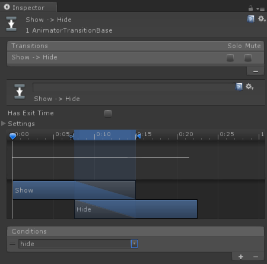
结束Hide状态之后，我们再让窗口回到Default的状态，以隐藏在屏幕外。新建一个联系Hide -> Default。这次要勾选Has Exit Time，不需要添加任何condition。
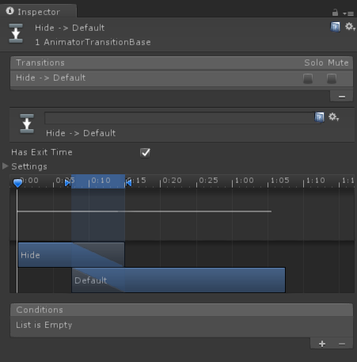
最后，我们得到这么一个Animation Controller:
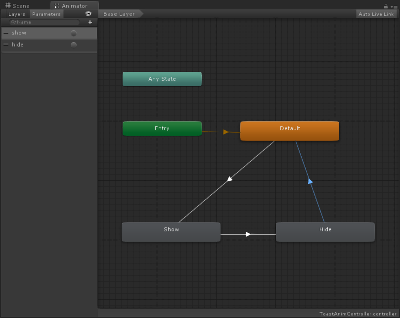
编写脚本
编写一个动画驱动脚本。创建脚本Toast.cs。
1 | using System.Collections; |
挂载到ToastRoot上，拖入引用。
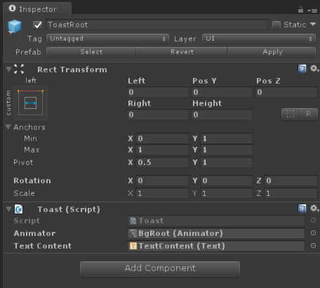
然后新建一个按钮，新建脚本ShowToastButton.cs
1 | using System.Collections; |
然后把按钮的点击响应设置成OnClick。
现在启动游戏，点击按钮，可以看到Toast显示两秒钟之后，自动消失了。